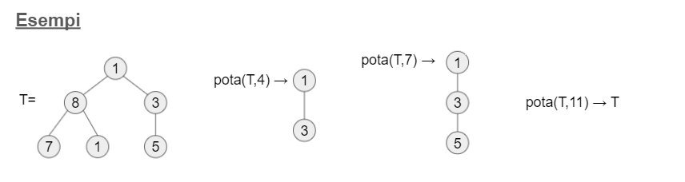
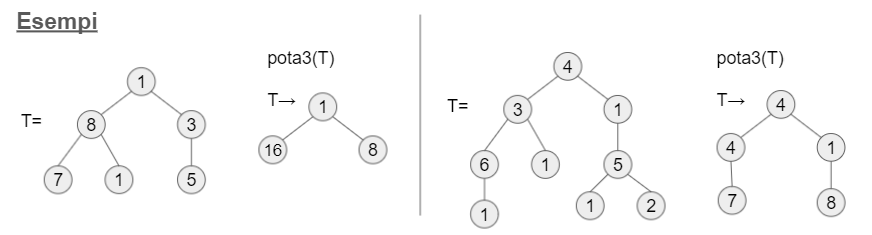
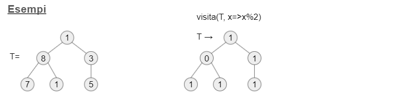
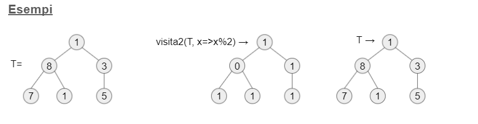
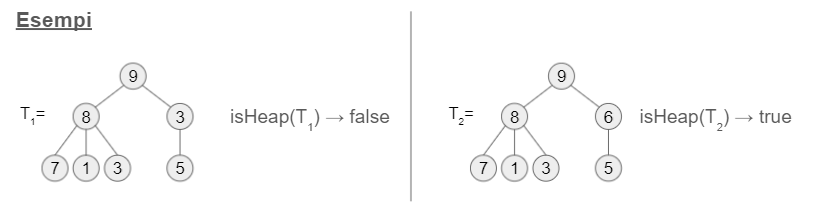

11 minutes
Esercizi liberi lezioni 1-20
Per completezza, si rimanda al primo post del sito per ulteriori informazioni.
Si ricorda che dello stesso esercizio possono esistere più varianti.
SommAlterna
Si scriva una funzione sommAlterna(a) che, dato come argomento un array di numeri a, restituisca la somma alternata degli elementi, ovvero +a0-a1+a2-a3+a4-a5… Esempi:
sommAlterna([1,2,3,4]) → -2
sommAlterna([1, -1, 1, -1]) → 4
sommAlterna([]) → 0
function sommAlterna(a) {
let sum = 0;
for (let i in a) {
if (i % 2 == 0)
sum += a[i];
else
sum -= a[i];
}
return sum;
}
SubSeq
Si scriva una funzione subSeq(ago,pagliaio) che, dati come argomenti due array con elementi di qualunque tipo, restituisca true se l’array ago è una sottosequenza dell’array pagliaio (ovvero, esiste un punto all’interno di pagliaio in cui si trovano tutti gli elementi di ago, consecutivamente e nello stesso ordine) Esempi:
subSeq([1],[4,12,4,1,4]) → true
subSeq([1,2],[4,7,2,1,4]) → false
subSeq([true,false,true],[true,true,false,true,true]) → true
function subSeq(ago, pagliaio) {
let index = pagliaio.indexOf(ago[0])
let count = 0;
if (index == -1)
return -1;
if (ago.length > 1) {
for (let i = 1; i < ago.length; i++) {
if (ago[i] == pagliaio[index + i]) {
count++;
if (count == ago.length - 1)
return true;
} else {
count = 0;
index = pagliaio.indexOf(ago[0], index + 1)
/* console.log(count) */
if (index == -1)
return false;
count = 1;
i = 1;
}
}
} else
return true;
}
Numeri di Tribonacci
La successione Tribonacci è definita come segue: t(0)=0; t(1)=0; t(2)=1, e per ogni termine successivo vale t(n)=t(n-1)+t(n-2)+t(n-3). Si scriva una funzione tribo(n) che calcoli e restituisca t(n). Esempi:
tribo(1) → 0
tribo(10) → 81
tribo(22) → 121415
function tribo(n) {
if (n == 0 || n == 1)
return 0;
if (n == 2)
return 1;
return tribo(n-1) + tribo(n-2)+tribo(n-3);
}
SerieParziale
Una successione è, come sapete, una sequenza ordinata di valori, che possiamo considerare una funzione f:ℕ→ℝ. Ad ogni successione può essere associata una serie, calcolata come somma degli elementi della successione. Una serie parziale si ottiene quando il calcolo della serie si arresta a un termine di indice n dato. Si scriva una serieParziale(f,n) che, data una funzione f come sopra, e un naturale n, restituisca la serie parziale di f limitata a n (partendo da 0, n incluso). Esempi:
serieParziale(x=>1, 5) → 6
serieParziale(x=>(x%2==0?1:-1),9) → 0
function serieParziale(f,n) {
let sum = 0;
for (let i = 0; i <= n; i++)
sum += f(i);
return sum;
}
SerieParziale 2
Con riferimento all’esercizio precedente, si scriva una funzione serieParziale2(f) che, ricevuta una funzione f:ℕ→ℝ che rappresenta una successione, restituisca una funzione gf:ℕ→ℝ tale che gf(n) calcoli la serie parziale di f (fra 0 e n inclusi). Esempi:
serieParziale2(x=>1)(5) → 6
serieParziale2(x=>(x%2==0?1:-1))(9) → 0
function serieParziale2(f) {
return function(x) {
return serieParziale(f,x)
};
}
// oppure
function serieParziale2(f) {
return ((x) => serieParziale(f,x))
}
Mkmap
Si scriva una funzione mkmap(s) che, ricevuto un array di stringhe s, restituisca un oggetto avente una proprietà i: 1 per ogni elemento s[i] di s. Esempi:
mkmap([“pippo”,“pluto”]) → { pippo: 1, pluto: 1 }
mkmap([]) → { }
mkmap([“pippo”,“pippo”]) → { pippo: 1 }
function mkmap(s) {
let obj = {};
for (let val of s) {
if (!(val in obj))
obj[val] = 1;
}
return obj;
}
Potatura
Si scriva una funzione pota(t,k) che, dato un albero binario t costruito come visto a lezione con nodi {val:v, sx:ts, dx:td}, restituisca un nuovo albero identico a t salvo che per il fatto che tutti i nodi aventi v>k (e gli eventuali sottoalberi radicati in tali nodi) vengono omessi.

var T = {};
T.val = 1
T.sx = { val: 8, sx: { val: 7 }, dx: { val: 1 } }
T.dx = { val: 3, dx: undefined, dx: { val: 5, sx: undefined, dx: undefined } };
function pota(t, k) {
if (t === undefined)
return;
if (t.sx && t.dx && t.sx.val > k && t.dx.val > k)
return;
if (t.sx && t.sx.val > k) {
return { val: t.val, sx: {}, dx: pota(t.dx, k) }
} else if (t.dx && t.dx.val > k) {
return { val: t.val, dx: {}, sx: pota(t.sx, k) }
}
return { val: t.val, sx: pota(t.sx, k), dx: pota(t.dx, k) }
}
Potatura 2
Si scriva una funzione pota2(t,k) che, dato un albero binario t costruito come visto a lezione con nodi {val:v, sx:ts, dx:td}, modifichi t rimuovendo tutti i nodi aventi v>k (e gli eventuali sottoalberi radicati in tali nodi), e restituisca il numero totale di nodi rimossi (inclusi quelli nei sottoalberi).

var T = {};
T.val = 1
T.sx = { val: 8, sx: { val: 7 }, dx: { val: 1 } }
T.dx = { val: 3, dx: undefined, dx: { val: 5, sx: undefined, dx: undefined } };
function countT(t) {
if (t == undefined)
return 0;
return 1 + countT(t.sx) + countT(t.dx);
}
function pota2(t,k) {
let counter = 0;
if (t == undefined)
return counter;
if (t.val > k) {
counter += countT(t);
t = (pota(t,-Infinity))
return counter;
} else {
if (t.sx) {
counter += pota2(t.sx,k)
}
if (t.dx) {
counter += pota2(t.dx,k)
}
}
return counter;
}
Potatura 3
Si scriva una funzione pota3(t) che, dato un albero binario t costruito come visto a lezione con nodi {val:v, sx:ts, dx:td}, modifichi t rimuovendo tutte le foglie, sommando i valori delle foglie rimosse a quello del loro nodo padre. La funzione non deve restituire nulla.

var T = {};
T.val = 1
T.sx = { val: 8, sx: { val: 7 }, dx: { val: 1 } }
T.dx = { val: 3, dx: undefined, dx: { val: 5, sx: undefined, dx: undefined
var TREE = {val:4, sx:{val:3, sx:{val:6, sx:{val:1}}, dx:{val:1}}, dx:{val:1, sx:{val:5, sx:{val:1}, dx:{val:2}}}};
function pota3(t) {
if (t.sx == undefined && t.dx == undefined) {
delete t.val;
return;
}
if (t.sx) {
if ((t.sx.sx == undefined) && (t.sx.dx == undefined)) {
t.val += t.sx.val;
delete t.sx;
} else {
pota3(t.sx);
}
}
if (t.dx) {
if ((t.dx.sx == undefined) && (t.dx.dx == undefined)) {
t.val += t.dx.val;
delete t.dx;
} else {
pota3(t.dx);
}
}
}
Mogol
Si scriva una funzione mogol(r,p) che, dato un array di stringhe r (ciascuna delle quali è una parola) e una stringa p (anch’essa una parola), restituisca un array contenente tutti gli elementi di r che fanno rima con p. Una parola fa rima con un’altra se il suffisso della prima che parte dalla penultima vocale (inclusa) è uguale all’analogo suffisso della seconda. Si assuma che siano usate solo lettere minuscole. Esempi:
mogol([“cuore”, “amore”, “sale”], “sudore”) → [“cuore”, “amore”]
mogol([“cuore”, “amore”, “sale”], “mare”) → []
mogol([“cuore”, “amore”, “sale”], “male”) → [“sale”]
function mogol(r, p) {
let res = [];
let vocali = ['a', 'e', 'i', 'o', 'u']
let suffix;
let n_vocali = 0;
for (var i = p.length - 1; i >= 0; i--) {
if (vocali.includes(p[i]))
n_vocali++;
if (n_vocali == 2)
break;
}
if (n_vocali == 0)
return res;
else
suffix = p.slice(i)
for (let str of r) {
if (str.endsWith(suffix))
res.push(str);
}
return res;
}
Gran Mogol
Si scriva una funzione granMogol(Q) che, dato un array di oggetti Q che rappresenta l’esito di una votazione, in cui ciascun oggetto ha la forma { candidato: n0, votanti: [n1, …, nk] } con ni che è una stringa contenente il nome di un membro delle Giovani Marmotte, restituisca il nome del prossimo Gran Mogol, vincitore dell’elezione. Attenzione: non vince chi prende più voti, ma solo il candidato che abbia tra i suoi votanti tutti i 3 nipoti “Qui”, “Quo” e “Qua”. Se nessun candidato è stato votato da tutti i 3 nipoti, la funzione deve restituire undefined. Se più candidati sono stati votati da tutti i 3 nipoti, la funzione deve restituire il primo in ordine alfabetico. Si assuma che ogni membro delle Giovani Marmotte possa votare anche più candidati (quindi, il relativo nome può apparire in più liste di votanti).
function granMogol(Q) {
let votedByNipoti = [];
for (let candidato of Q) {
let nipoti_votanti = 0;
for (let votante of candidato['votanti']) {
if (votante == 'Qui' || votante == 'Qua' || votante == 'Quo')
nipoti_votanti++;
}
if (nipoti_votanti == 3)
votedByNipoti.push(candidato['candidato']);
}
if (votedByNipoti.length > 1) {
return votedByNipoti.sort()[0]
} else
return votedByNipoti[0];
}
let test = [{ candidato: 'pippo', votanti: ['pluto', 'paperino', 'a'] }]
let voti = [{ candidato: "bbb", votanti: ["Quo", "fff", "Qui", "Qua"] }, { candidato: "zzz", votanti: ["Quo", "Qui", "Qua", "aaaa"] }, { candidato: "ccc", votanti: ["gfgf", "vvbv", "vcbdvcbd"] }];
granMogol(voti)
Zip
Si scriva una funzione zip(o) che, ricevuto un oggetto qualunque o, restituisca un array così fatto: per ogni proprietà p = chiave: valore di o, l’array deve contenere come elemento la coppia [chiave, valore] rappresentata come array di 2 elementi. L’array risultante deve essere ordinato alfabeticamente per chiave. Esempi:
zip({a:1, b:true}) → [ [“a”,1], [“b”, true] ]
zip({b:true, a:1}) → [ [“a”,1], [“b”, true] ]
zip({}) → []
function zip(o) {
return Object.entries(o).sort(function(a, b) {
if (a[0] < b[0])
return -1;
if (a[0] > b[0])
return 1;
return 0;
})
}
Unzip
Con riferimento all’esercizio precedente, si scriva una funzione unzip(a) che, ricevuto un array di coppie come restituito da zip, restituisca a sua volta l’oggetto corrispondente, applicando la trasformazione inversa. Esempi:
unzip([[“a”,1], [“b”, true]]) → {a:1, b:true}
unzip([]) → {}
function unzip(a) {
let obj = {};
for (let arr of a) {
obj[arr[0]] = arr[1];
}
return obj;
}
Visita
Si scriva una funzione visita(t,f) che, dato un albero binario t costruito come visto a lezione con nodi {val:v, sx:ts, dx:td}, e una funzione f, modifichi l’albero sostituendo il val di ogni nodo con il risultato di f applicata al valore precedente. La funzione non restituisce nulla.

function visita(t,f) {
if (t == undefined)
return;
t.val = f(t.val);
visita(t.sx,f);
visita(t.dx,f);
}
Visita 2
Si scriva una funzione visita2(t,f) che, dato un albero binario t costruito come visto a lezione con nodi {val:v, sx:ts, dx:td}, e una funzione f, restituisca un nuovo albero ottenuto sostituendo il val di ogni nodo con il risultato di f applicata al valore precedente. L’albero originale non deve essere modificato.

var T = {};
T.val = 1
T.sx = { val: 8, sx: { val: 7 }, dx: { val: 1 } }
T.dx = { val: 3, dx: undefined, dx: { val: 5, sx: undefined, dx: undefined } };
function visita2(t,f) {
if (t == undefined)
return;
return {val: f(t.val), sx: visita2(t.sx,f), dx: visita2(t.dx,f)};
}
Funprop
Si scriva una funzione funprop(f,p) che, date due funzioni f:ℕ→ℝ e p:ℝ→𝔹 (dove 𝔹 rappresenta il dominio dei booleani), restituisca una funzione s(a,b) la quale, ricevuti due interi a e b con a≤b, restituisca un array ordinato di tutti gli interi k∈[a,b] in cui f soddisfa p. Se p non viene fornito, si considera sempre soddisfatto. Esempi:
funprop(n=>2*n,n=>n%2==0)(4,6) → [4, 5, 6]
funprop(n=>2*n,n=>n>10)(4,8) → [6,7,8]
funprop(n=>n,n=>n%2==1)(10,20) → [11,13,15,17,19]
funprop(n=>n*n)(4,6) → [4,5,6]
function funprop(f,p = (n) => (true)) {
return function s(a,b) {
let arr = [];
let num = 0;
for (let i = a; i <= b; i++) {
num = f(i);
if (p(num)) // nel caso di default non viene valutata ma restituisce solamente true
arr.push(i);
}
return arr;
}
}
SelApply
Si scriva una funzione selApply(f,p) che, date due funzioni f:ℕ→ℝ e p:ℝ→𝔹 (dove 𝔹 rappresenta il dominio dei booleani), restituisca una funzione s(a) così definita: per ogni elemento ai di a (che sarà un array di naturali), verifica se l’elemento soddisfa p; in caso positivo, rimpiazzalo con f(ai), altrimenti lascia ai. La funzione s modifica l’array a cui è applicata. Esempi: se a=[1,2,3,4],
selApply(n=>n*n,n=>n%2==0)(a); a → [1,4,3,16]
selApply(n=>0,n=>n>2)(a); a → [1,2,0,0]
selApply(n=>n,n=>n>0)(a); a → [1,2,3,4]
function selApply(f,p) {
return function(a) {
for (let i = 0; i < a.length; i++) {
num = f(a[i])
if (p(a[i]))
a[i] = num;
}
return a;
}
}
isHeap
Si scriva una funzione isHeap(t) che, dato un albero k-ario t costruito come visto a lezione con nodi {val:v, figli: [t1, …, tn]}, restituisca true se l’albero soddisfa la proprietà di heap, ovvero il valore del padre è sempre maggiore del valore di ciascuno dei figli

T={val: undefined, figli: []}
T.val=9
T.figli=[{val:8, figli:[{val:7},{val:1},{val:3}]},{val:6, figli:[{val:5}]}]
function isHeap(t) {
if (t == undefined)
return true;
if (t.figli == undefined)
return true; // è un heap se ho un albero con un solo nodo
for (var figlio of t.figli)
if (t.val < figlio.val)
return false;
// Se sono qui sono tutti più piccoli
for (figlio of t.figli)
if (!isHeap(figlio))
return false;
return true;
}
Semplifica
Si scriva una funzione semplifica(ao,ak) che, ricevuto un array di oggetti ao, e un array di stringhe ak, “semplifichi” gli oggetti contenuti in ao in modo da eliminare in ciascun oggetto tutte le proprietà le cui chiavi non compaiono nell’elenco di ak. La funzione deve restituire il numero complessivo di proprietà eliminate. Si cerchi di realizzare un’implementazione efficiente, dal punto di vista algoritmico. Esempi:
o = {a:12, q: 3}; ao=[ { a:1, b:3}, {a:5, c: 7}, {q:4, d:true}, o ]
semplifica(ao,[“q”,“c”]) → 5
ao → [ {}, {c:7}, {q:4}, {q:3} ]
o → {q:3}
var o= {a:12, q: 3};
var ao=[ { a:1, b:3}, {a:5, c: 7}, {q:4, d:true}, {a:12, q: 3}]
function semplifica(ao,ak) {
let counter = 0;
for (var obj of ao)
for (var key in obj)
if (!ak.includes(key)) {
delete obj[key]
counter++;
}
return counter;
}